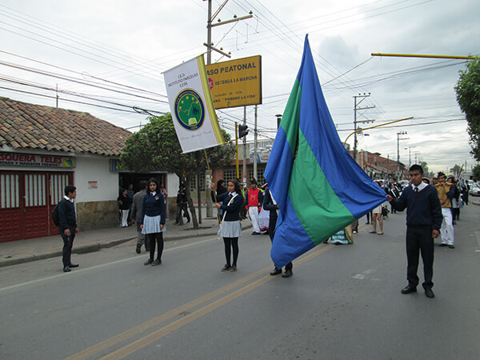

INSTITUTO PARCELAS
RESEÑA HISTÓRICA
En el año 1950, lo que hoy se conoce como la vereda de Parcelas eran las granjas de la familia Ospina Pérez, la que antes de la parcelación pertenecía a un solo dueño y para recorrerla, se necesitaban varios días, dada su extensión.
Según la tradición oral, nos cuenta la señora Pilar Martínez, quien vive en la vereda muy cerca de la institución hace más de 50 años, que los terrenos donde hoy se encuentra ubicada la misma, pertenecían a Don Ruperto Melo,
quien las donó a la comunidad de San Gregorio, y allí se construyó la escuela que llevaría su nombre. la hacienda de la comunidad religiosa comprendía lo que hoy se llama las fincas "Potrero Chico", "San Felipe", "El Rozo", " Villa
Diosa", y " San Gregorio", llegando a Siberia.
Para la década de los 60, empezó a funcionar la escuela Ruperto Melo donde iniciaron sus primeras letras muchos y muchas cotenses. Además, para la época son de recordar los padres
capuchinos quienes desde allí impartían educación y celebraban la Sagrada Eucaristia cada domingo. La parte conocida como el "Humedal" pertenecia a la escuela y allí, alrededor de unos treinta y cinco años atrás, llegaban aves
del Canadá, la gente se bañaba en el río Chicú (hoy, lamentablemnte en via de extinción, dado al alto grado de contaminación), se cogía el pescado capital y la carpa y en la desembocadura del Chicú en el río Bogotá, el cangrejo
de río.
Para los años 90, funcionó allí el de jardín "Los Venaditos" y posteriormente colegio Comunal. Nos cuenta Don Noé Santamaría, que para 1996, la comunidad se tomó la sede del colegio, reclamándole la misma a los
padres Capuchinos y ante la indiferencia de ellos, hubo la necesidad de intervenir el Alcalde de turno, Señor Néstor González Romero, quien al ver que legalmente los terrenos le pertenecían a los religiosos, entró a negociar con
ellos el predio llegando felizmente a un acuerdo entre las partes y de esta forma, pasa a ser propiedad del municipio.
En el año 2002 y según el comodato No. 02 del 14 de enero del mismo, firmado por tres años entre el señor alcalde Néstor González Romero y la licenciada Gloria Elsa Castillo Pinilla, en calidad de rectora de la Institución Educativa Departamental Enrique Pardo Parra, oficialmente pasa a ser parte integral de ésta, abriendo las puertas de los grados sexto, séptimo y octavo, ampliando así la cobertura educativa a los habitantes del sector, siendo los primeros docentes los Licenciados Clara Barragán, Jairo Suárez, Carlos Triviño, Dany Constanza Lozada y Mauricio Mora, funcionario de la alcaldía quien atendía el área de Informática. Durante los años 2003 y 2004. la sede Campestre contó con los grados sexto, séptimo, octavo y noveno, siendo atendida por cuatro docentes de planta Licenciados Marlén Ruíz De Páez, Graciela Martín Martín, Carlos Silverio Torres Sosa y Carlos Eduardo Moya Rodríguez; además, para el cubrimiento total de las áreas del conocimiento se desplazan docentes de la sede centro jornada de la mañana, Licenciados Yaneth Gómez Ortíz, Mélida Casas de Guerrero y Luz Stella Fuentes Poveda. Así nace la sede campestre de la Institución Educativa Departamental Enrique Pardo Parra, brindando a los estudiantes altas zonas verdes y la inspiración de un paisaje natural sin limitaciones de espacio; donde se espera además como lo aspiran algunos padres de familia encabezados por el señor Roberto Rodríguez, que la sede cuente algún día con la cobertura educativa asta el grado Once y este sueño sorpresivamente se vio realizado el pasado 29 de diciembre de 2004, cuando por resolución No. 004531, la Secretaría de Educación del Departamento, integra la sede con las escuelas rurales El Abra, Rozo, Ruperto Melo Y siberia, naciendo así en el 2005, la Institución Educativa Departamental "INSTITUTO PARCELAS" , siendo su primer rector, el Licenciado Carlos Eduardo Moya Rodríguez, docente fundador de la institución y se encuentra al frente del área de Sociales, para garantizar el cumplimiento del Plan de estudios se hizo necesario en coordinación con la Dirección de Núcleo reubicar varios docentes y por ello, llegó a la sede Secundaria para el área de artística, la Licenciada Marina Riveros Parrado, quien se venía desempeñando en El Abra, lo mismo la rotación de las docentes Patricia Hernández y Gladys Luna; además, la secretaria de Educación nombró provisionalmente a la Licenciada Mónica Indira Lizcano Echeverry para el área de informática. bajo la administración del Licenciado Carlos Moya, se gestionó la visita de los supervisores, para la aprobación de estudios de la Básica Secundaria, la cual se obtiene según resolición No. 010154, del primero (1) de diciembre del 2205 y se da viabilidad para ampliar la cobertura hacia la Educación Media.
A comienzos del 2006, es trasladada a la Institución como rectora, la Licenciada Clara Inés Cruz Velásquez, quien no dura más de tres meses, renunciando a su cargo y la Secretaría de Educación de Cundinamarca encarga nuevamente como
rector, al Licenciado Carlos Moya, quien al frente de la misma, logra con la colaboracion de los docentes, el licenciado Jorge Enrique Rueda, director de Nucleó Educativo y el doctor Luis Eduardo Castro Galindo, alcalde Municipal,
el reconocimiento por parte de la Secretaría de Educación y la aprovación de estudios de la Media Académica, según resolución No. 007010 del cinco (5) de Diciembre del 2006. En la tarea programática, se ha contado a partir del
mismo momento de su creación como Institución, de la colaboración de la Asociación de Padres de Familia, el Consejo Directivo y la comunidad en general; finalizando el mes de Diciembre, renuncia un docente fundador, la Licenciada
Marlen Ruíz, del área de Biología y Química y en su reemplazo llega para el 2007, el Licenciado Carlos Arturo Acosta Figueredo; además trasladan a la Licenciada Julieth Noraime Padilla Del Castillo, del área de informática, reemplazando
a Monica Indira Lizcano Echeverry. Iniciando el año 2007, es trasladado como rector en propiedad el Licenciado Salomón Muñoz Muñoz, y en el mes de abril del mismo año, la Secretaria de Educación nombra como coordinador al Licenciado
Carlos Eduardo Moya Rodríguez, según resolución No. del 26 de abril del 2007.
 Durante el primer semestre del 2007, la Institución observó con tristeza la falta de interés por parte de la secretaría de Educación del departamento, al no asignar la planta de docentes
completa en secundaria, pues hizo falta un Físico Matemático y el docente de Sociales. Iniciando el segundo semestre se contó con la sorpresa que uno de los docentes fundadores renunció irrevocablemente (el Licenciado, Carlos Silverio
Torres Sosa, del area de Matemáticas) por lo que hubo un faltante de tres docentes; días después son nombrados provisionalmente los Licenciados Julieth Noraime Padilla Del Castillo y Jaime Humberto Rodríguez Castellanos, del área
de Física-Matemáticas y Sociales, respectivamente.
Durante el primer semestre del 2007, la Institución observó con tristeza la falta de interés por parte de la secretaría de Educación del departamento, al no asignar la planta de docentes
completa en secundaria, pues hizo falta un Físico Matemático y el docente de Sociales. Iniciando el segundo semestre se contó con la sorpresa que uno de los docentes fundadores renunció irrevocablemente (el Licenciado, Carlos Silverio
Torres Sosa, del area de Matemáticas) por lo que hubo un faltante de tres docentes; días después son nombrados provisionalmente los Licenciados Julieth Noraime Padilla Del Castillo y Jaime Humberto Rodríguez Castellanos, del área
de Física-Matemáticas y Sociales, respectivamente.
Las administraciones municipales año tras año, han liderado proyectos de envergadura, tendientes a fortalecer el que hacer Educativo, es así como bajo el auspicio del señor
alcalde Doctor Luis Eduardo Castro Galindo quien a gestionado recursos ante la Gobernación de Cundinamarca, se adelantó la construcción del Salón Cultural y de un Campo Deportivo Múltiple; además, se adquirió el terreno contiguo
a la sede actual de una hectárea y en ella se adelanta la construcción de la nueva sede del
"INSTITUTO PARCELAS ", con amplias zonas verdes, de recreación y esparcimiento. Según los planos, la infraestructura contará con todas las normas ICONTEC (sede administrativa, salones, laboratorios, sala de Informática,
biblioteca, campos deportivos, concha acústica, patio de Banderas, parqueaderos para vehiculos y bicicletas, entre otros), de una sede tipo campestre y orgullo de la comunidad rural cotense; la que se inspira inaugurar al finalizar
la presente vigencia.
Dentro de los predios de la institución existe una guardería atendida por madres de la comunidad del sector de Parcelas, lo que
conlleva a replantear estrategias y buscar ubicar este centro en un sitio ideal y acorde con la edad cronológica de los párvulos...
HORIZONTE INSTITUCIONAL
Misión
El IED. Instituto Parcelas centra su mirada en el estudiante, integra al currículo programas enfocados al desarrollo de habilidades sociales, de prevención y resolución de conflictos, de formación ética y proyecto de vida, entre otros. En un ambiente campestre, a través de un trabajo interdisciplinario, se brinda a nuestros estudiantes, la oportunidad de desarrollar capacidades individuales, afectivas, cognitivas, productivas y vocacionales de aporte, partiendo de su propia realidad, dentro de un aprendizaje significativo, investigativo y participativo, que les facilite mejorar su calidad de vida, crecer y realizarse en lo personal, lograr la integración familiar y el progreso comunitario.
Visión
Para el 2025; La IED Parcelas será reconocida por el fortalecimiento académico, el desarrollo humano y la democratización del conocimiento, basado en un modelo de escuela con tendencia a la innovación en las prácticas pedagógicas. Contribuiremos en la formación de estudiantes capaces de afrontar con acierto, su proyecto de vida, y de aportar a la sociedad, a partir de la vivencia de valores basados en el respeto, la responsabilidad y la solidaridad, así como el fomento de la cultura de la paz y el cuidado del medio ambiente.
